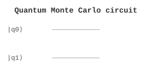

<!DOCTYPE html>
<html xmlns="http://www.w3.org/1999/xhtml">
<head>
  <meta charset="utf-8" />
  <meta name="generator" content="pandoc 3.10.2" />
  <meta name="viewport" content="width=device-width, initial-scale=1.0, user-scalable=yes" />
  <meta name="author" content="QuoNic" />
  <title>quantum_monte_carlo</title>
  <style>
    /* Default styles provided by pandoc.
    ** See https://pandoc.org/MANUAL.html#variables-for-html for config info.
    */
    html {
      color: #1a1a1a;
      background-color: #fdfdfd;
    }
    body {
      margin: 0 auto;
      max-width: 36em;
      padding-left: 50px;
      padding-right: 50px;
      padding-top: 50px;
      padding-bottom: 50px;
      hyphens: auto;
      overflow-wrap: break-word;
      text-rendering: optimizeLegibility;
      font-kerning: normal;
    }
    @media (max-width: 600px) {
      body {
        font-size: 0.9em;
        padding: 12px;
      }
      h1 {
        font-size: 1.8em;
      }
    }
    @media print {
      html {
        background-color: white;
      }
      body {
        background-color: transparent;
        color: black;
      }
      p, h2, h3 {
        orphans: 3;
        widows: 3;
      }
      h2, h3, h4 {
        page-break-after: avoid;
      }
    }
    p {
      margin: 1em 0;
    }
    a {
      color: #1a1a1a;
    }
    a:visited {
      color: #1a1a1a;
    }
    img {
      max-width: 100%;
    }
    svg {
      height: auto;
      max-width: 100%;
    }
    h1, h2, h3, h4, h5, h6 {
      margin-top: 1.4em;
    }
    h5, h6 {
      font-size: 1em;
      font-style: italic;
    }
    h6 {
      font-weight: normal;
    }
    ol, ul {
      padding-left: 1.7em;
      margin-top: 1em;
    }
    li > ol, li > ul {
      margin-top: 0;
    }
    blockquote {
      margin: 1em 0 1em 1.7em;
      padding-left: 1em;
      border-left: 2px solid #e6e6e6;
      color: #606060;
    }
    code {
      white-space: pre-wrap;
      font-family: Menlo, Monaco, Consolas, 'Lucida Console', monospace;
      font-size: 85%;
      margin: 0;
      hyphens: manual;
    }
    pre {
      margin: 1em 0;
      overflow: auto;
    }
    pre code {
      padding: 0;
      overflow: visible;
      overflow-wrap: normal;
    }
    .sourceCode {
     background-color: transparent;
     overflow: visible;
    }
    hr {
      border: none;
      border-top: 1px solid #1a1a1a;
      height: 1px;
      margin: 1em 0;
    }
    table {
      margin: 1em 0;
      border-collapse: collapse;
      width: 100%;
      overflow-x: auto;
      display: block;
      font-variant-numeric: lining-nums tabular-nums;
    }
    table caption {
      margin-bottom: 0.75em;
    }
    tbody {
      margin-top: 0.5em;
      border-top: 1px solid #1a1a1a;
      border-bottom: 1px solid #1a1a1a;
    }
    th {
      border-top: 1px solid #1a1a1a;
      padding: 0.25em 0.5em 0.25em 0.5em;
    }
    td {
      padding: 0.125em 0.5em 0.25em 0.5em;
    }
    header {
      margin-bottom: 4em;
      text-align: center;
    }
    #TOC li {
      list-style: none;
    }
    #TOC ul {
      padding-left: 1.3em;
    }
    #TOC > ul {
      padding-left: 0;
    }
    #TOC a:not(:hover) {
      text-decoration: none;
    }
    span.smallcaps{font-variant: small-caps;}
    div.columns{display: flex; gap: 1.5em;}
    div.column{flex: auto;}
    @media screen {
    div.columns{gap: min(4vw, 1.5em);}
    div.column{overflow-x: auto;}
    }
    div.hanging-indent{margin-left: 1.5em; text-indent: -1.5em;}
    /* The extra [class] is a hack that increases specificity enough to
       override a similar rule in reveal.js */
    ul.task-list[class]{list-style: none;}
    ul.task-list li input[type="checkbox"] {
      font-size: inherit;
      width: 0.8em;
      margin: 0 0.8em 0.2em -1.6em;
      vertical-align: middle;
    }
  </style>
  <script defer="" src="" type="text/javascript"></script>
</head>
<body>
<header id="title-block-header">
<h1 class="title">quantum_monte_carlo</h1>
<p class="author">QuoNic</p>
</header>
<div class="center">
<p><strong>Algorithms / 算法</strong> | 难度：高级 | 预计时间：20
分钟</p>
</div>
<h1 id="为什么需要">为什么需要？</h1>
<p>量子蒙特卡洛是经典蒙特卡洛方法的量子推广，提供二次加速。</p>
<h2 id="经典局限">经典局限</h2>
<p>̱</p>
<ul>
<li><p>经典蒙特卡洛需要 <span
class="math inline">\(O(1/\epsilon^2)\)</span> 样本</p></li>
<li><p>对于高维积分，经典方法效率低</p></li>
</ul>
<h2 id="量子优势">量子优势</h2>
<p>̱</p>
<ul>
<li><p>量子蒙特卡洛只需要 <span
class="math inline">\(O(1/\epsilon)\)</span> 样本</p></li>
<li><p>提供二次加速</p></li>
<li><p>适用于高维积分和期望值估计</p></li>
</ul>
<h2 id="实际应用">实际应用</h2>
<p>̱</p>
<ul>
<li><p>金融（期权定价）</p></li>
<li><p>物理（量子模拟）</p></li>
<li><p>机器学习（期望值估计）</p></li>
</ul>
<h1 id="快速上手">快速上手</h1>
<pre style="python"><code>from quonic.algorithms import quantum_monte_carlo

# Estimate expectation value
result = quantum_monte_carlo(func=&quot;x^2&quot;, domain=[0, 1])
print(f&quot;Estimate: {result.estimate}&quot;)
print(f&quot;Error: {result.error}&quot;)</code></pre>
<p><strong>预期输出</strong>：</p>
<pre><code>Estimate: 0.333
Error: 0.001</code></pre>
<h1 id="原理详解">原理详解</h1>
<h2 id="电路图">电路图</h2>
<div class="center">
<p></p>
</div>
<h2 id="数学推导">数学推导</h2>
<p>量子蒙特卡洛估计积分： <span class="math display">\[\begin{equation}
I = \int f(x) p(x) dx
\end{equation}\]</span></p>
<p><strong>算法步骤</strong>：</p>
<ol>
<li><p>用量子态编码概率分布 <span
class="math inline">\(p(x)\)</span></p></li>
<li><p>用受控门计算 <span class="math inline">\(f(x)\)</span></p></li>
<li><p>用 QPE 估计期望值</p></li>
</ol>
<p><strong>复杂度</strong>： <span
class="math display">\[\begin{equation}
O(1/\epsilon) \text{ vs } O(1/\epsilon^2)
\end{equation}\]</span></p>
<h2 id="几何解释">几何解释</h2>
<p>量子蒙特卡洛利用量子叠加态同时采样多个点，通过干涉效应加速积分估计。</p>
<h1 id="代码详解">代码详解</h1>
<pre style="python"><code>from quonic.algorithms import quantum_monte_carlo

# quantum_monte_carlo(func, domain, shots)
# func: function to integrate
# domain: integration domain
# shots: number of measurements
result = quantum_monte_carlo(func=&quot;x^2&quot;, domain=[0, 1], shots=1024)

# result.estimate: estimated integral
# result.error: estimation error
print(f&quot;Estimate: {result.estimate}&quot;)</code></pre>
<h1 id="进阶用法">进阶用法</h1>
<h2 id="场景-1不同函数">场景 1：不同函数</h2>
<pre style="python"><code># Different functions
result1 = quantum_monte_carlo(func=&quot;x^2&quot;, domain=[0, 1])
result2 = quantum_monte_carlo(func=&quot;sin(x)&quot;, domain=[0, 3.14])
result3 = quantum_monte_carlo(func=&quot;exp(-x^2)&quot;, domain=[-5, 5])</code></pre>
<h1 id="适用场景">适用场景</h1>
<h2 id="金融">金融</h2>
<p>量子蒙特卡洛可以用于期权定价和风险分析。</p>
<h2 id="物理">物理</h2>
<p>量子蒙特卡洛可以用于量子模拟和统计物理。</p>
<h1 id="常见问题">常见问题</h1>
<h2 id="量子蒙特卡洛的加速比是多少">量子蒙特卡洛的加速比是多少？</h2>
<p>二次加速：<span class="math inline">\(O(1/\epsilon)\)</span> vs <span
class="math inline">\(O(1/\epsilon^2)\)</span>。</p>
<h2 id="量子蒙特卡洛的局限性是什么">量子蒙特卡洛的局限性是什么？</h2>
<p>需要能够高效编码概率分布和函数。</p>
<h1 id="学习路径">学习路径</h1>
<h2 id="前置知识">前置知识</h2>
<p>̱</p>
<ul>
<li><p>量子相位估计</p></li>
<li><p>蒙特卡洛方法</p></li>
<li><p>概率论</p></li>
</ul>
<h2 id="继续学习">继续学习</h2>
<p>̱</p>
<ul>
<li><p>量子金融</p></li>
<li><p>量子模拟</p></li>
<li><p>量子机器学习</p></li>
</ul>
<h1 id="完整示例代码">完整示例代码</h1>
<h2 id="示例-1基本量子蒙特卡洛">示例 1：基本量子蒙特卡洛</h2>
<pre style="python"><code>from quonic.algorithms import quantum_monte_carlo

result = quantum_monte_carlo(func=&quot;x^2&quot;, domain=[0, 1])
print(f&quot;Estimate: {result.estimate}&quot;)</code></pre>
<p> </p>
<h1 id="下载">下载</h1>
<p></p>
<ul>
<li><p>(https://github.com/ChrisLee0721/QuoNic/blob/main/examples/quantum_monte_carlo/quantum_monte_carlo.py)</p></li>
</ul>
</body>
</html>
